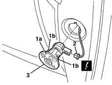
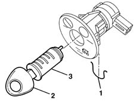
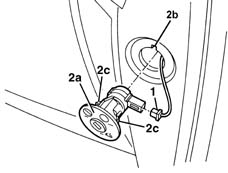

5580C26 LOCK BARREL KEY/SWITCH for deactivating passenger 'AIR BAG - R.R.
- Path
- Procedures > 55 ELECTRICAL EQUIPMENT > 5580 SPECIAL ACCESSORIES > 5580C air bag system > 5580C26 LOCK BARREL KEY/SWITCH for deactivating passenger 'AIR BAG - R.R.
- Kind
- repair procedure (removal / refitting; the operation number is the code)
- Applies to
- all engines; all production periods
- Interactive page
- https://sloeber94.github.io/elrnDB-lYpsln/en/#/2429454
Applies to: all engines; all production periods
Place the ignition key in the OFF position and extract it;
Disconnect the battery.
Applies to: all engines; all production periods
 Removing
Removing
 Refitting
Refitting1. Remove the switch (1a), releasing the retainers (1b).
2. Disconnect the electrical connection.
 | Name | Connector |
|---|---|---|
2 | Passenger's Air Bag disablement switch |
3. Recover the switch.

Applies to: all engines; all production periods
1. Withdraw the retaining clip.
2. Insert the vehicle key in the barrel.
3. Extract the lock barrel.

Applies to: all engines; all production periods
Refitting
RemovingCheck that the switch is not damaged and, if necessary, conduct an electrical test on it.
Insert the key barrel, position the clip and remove the key.
1. Connect the electrical connection.
2. Insert the switch (2a) in the housing, engaging the tab in the housing (2b). Attach the retainers (2c).

Applies to: all engines; all production periods
Connect the battery.
Check the operation of the system using the Examiner.
Topics linked from this page (1)
Topics that link to this page (13)
- K82 PASSENGER AIR BAG DISABLED WARNING LIGHT
- 5020B10 heater control support - r+r
- 5020B35 outdoor/recirculation air intake flap control cable - r r
- 5020B38 air distribution flap control cable - r+r
- 5020B42 air mixer flap control cable - r+r
- 5040C10 air conditioner box - r+r
- 5040D75 Air conditioning recirculation flap control MOTOR - R.R.
- 5520A16 ignition key block - r+r replace with different unit
- 5580C22 AIR BAG MODULE - Passenger side - R.R.
- 7005C18 front side door lock barrel (in handle) - replace with different version
- 7040A10 instrument facia trim - r+r
- 7040A25 central facia trim - r r
- 7040L10 cabin floor carpet - r r